Each photo has some of my favorite foods from when I've eaten out. The caption contains where the food is from, both restaurant name and location. Use the buttons to sort through the different categories. Favorite the ones you like — perhaps it'll be a new list of places you can go to next!
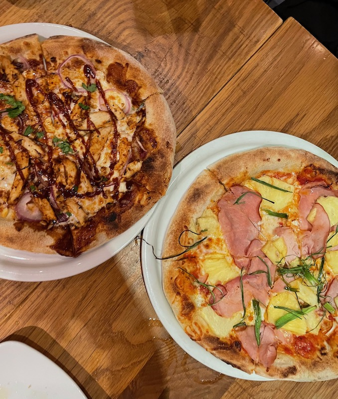
Barbecue and Hawaiian pizzas from California Pizza Kitchen in Troy, Michigan
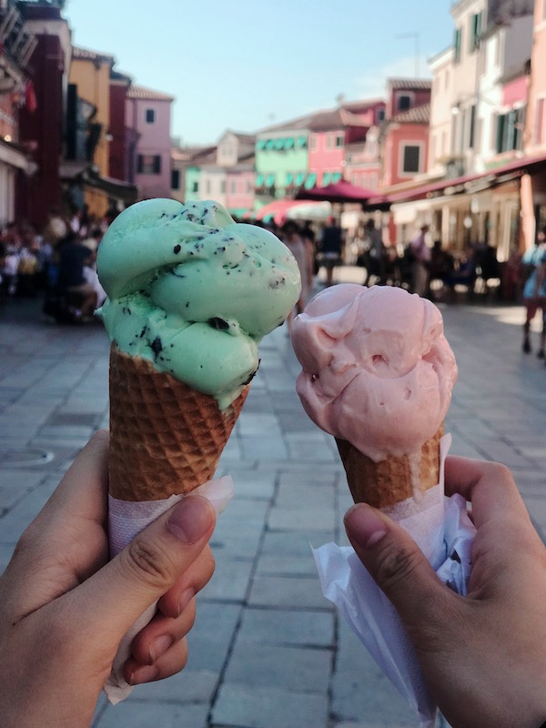
Strawberry and mint gelato from the streets of Venice, Italy
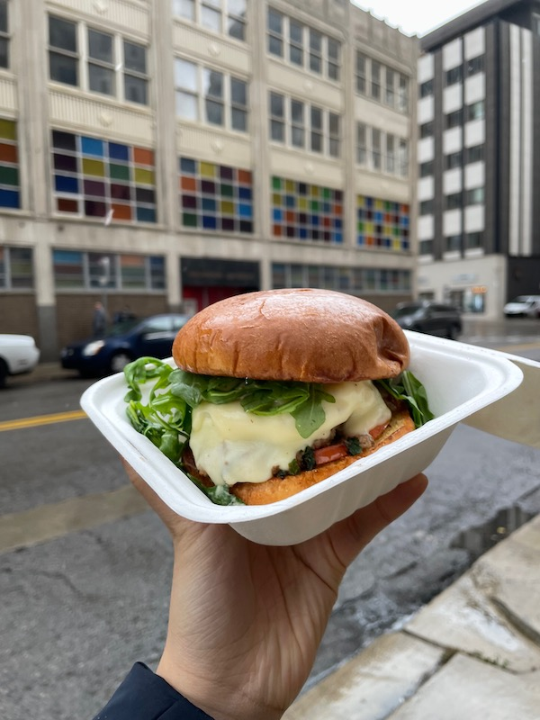
Egg burger from Iggy's in Detroit, Michigan
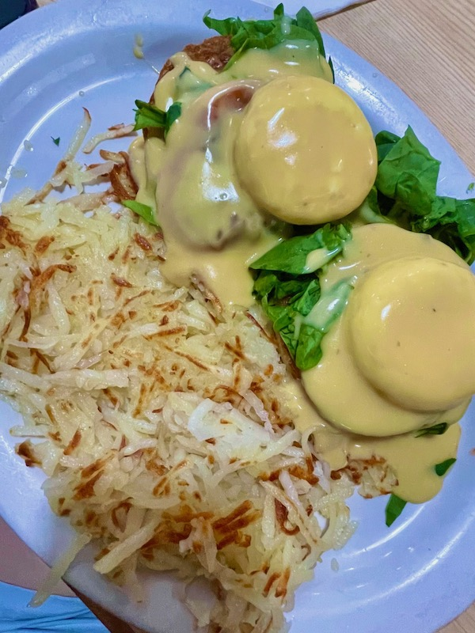
Florentine benedict from Jonny Cakes Cafe in Troy, Michigan
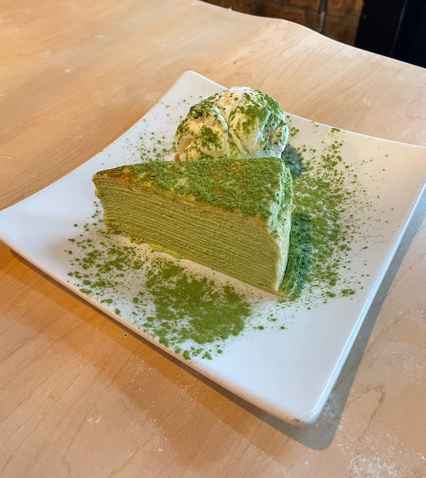
Lady M's Layered Matcha Cake from Gyu-Kaku BBQ in Chicago, Illinois
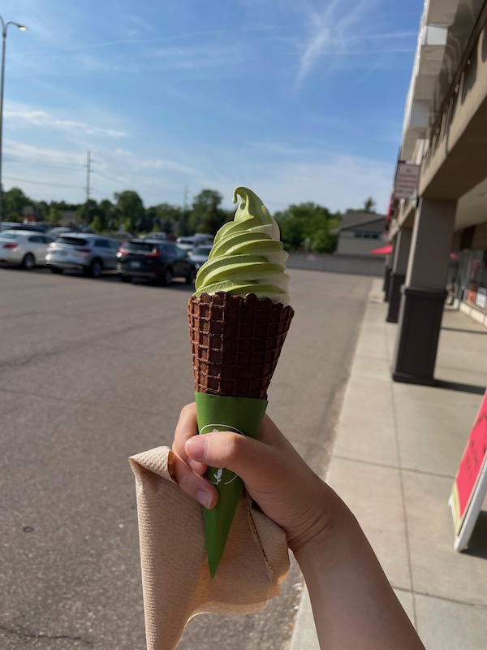
Soft serve matcha ice cream cone from Premium Matcha Cafe Maiko in Troy, Michigan
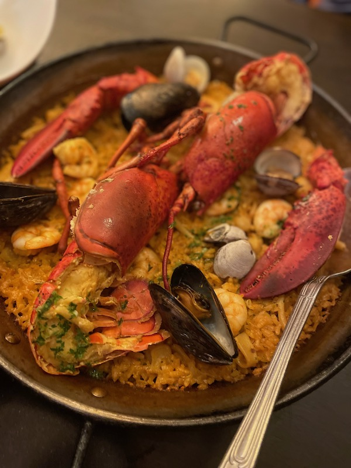
Seafood paella from Bodega in Washington, D.C.
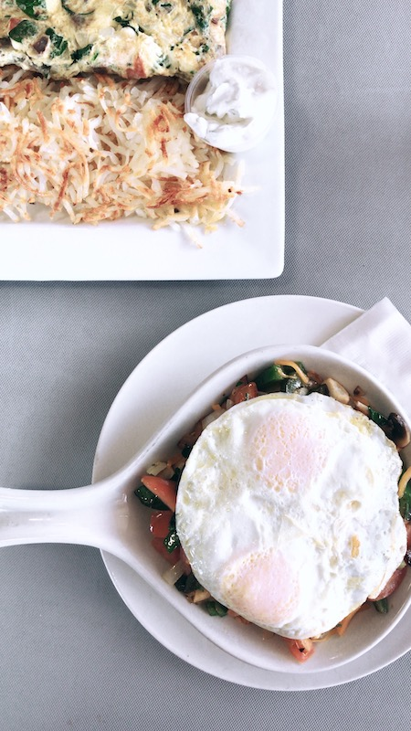
Veggie skillet from Poached in Troy, Michigan
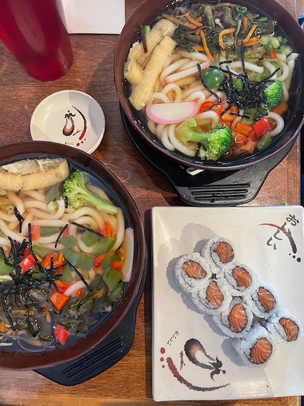
Sadako Udon Lunch Meal from Sadako in Ann Arbor, Michigan
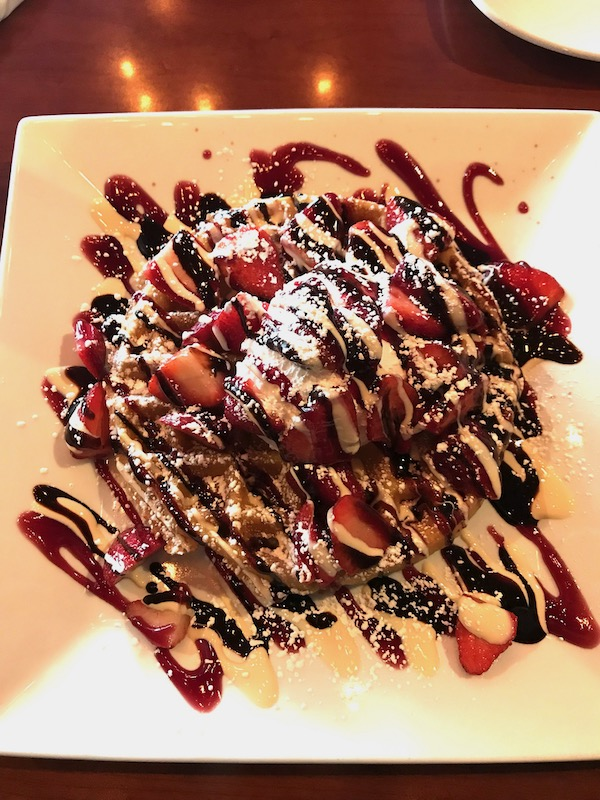
Sweetheart Waffles from Shine Cafe in Troy, Michigan
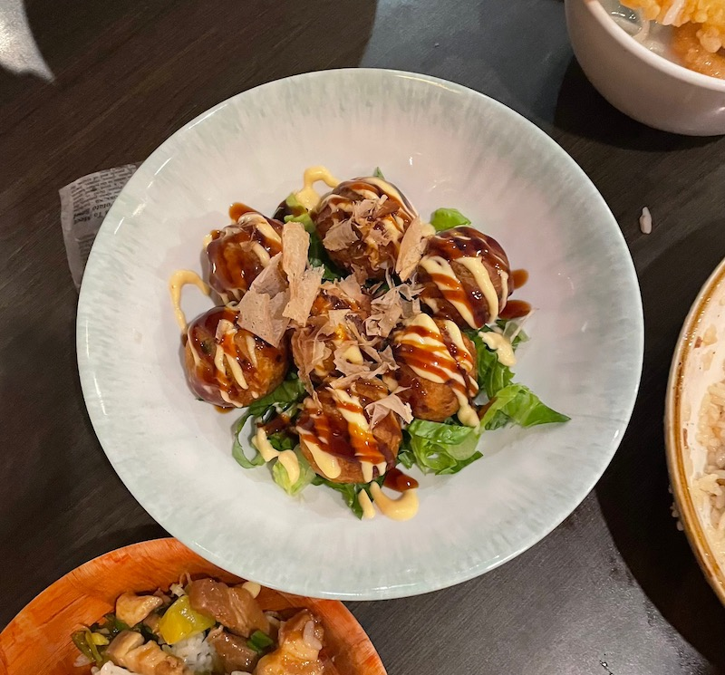
Takoyaki at Reren in Washington, D.C.
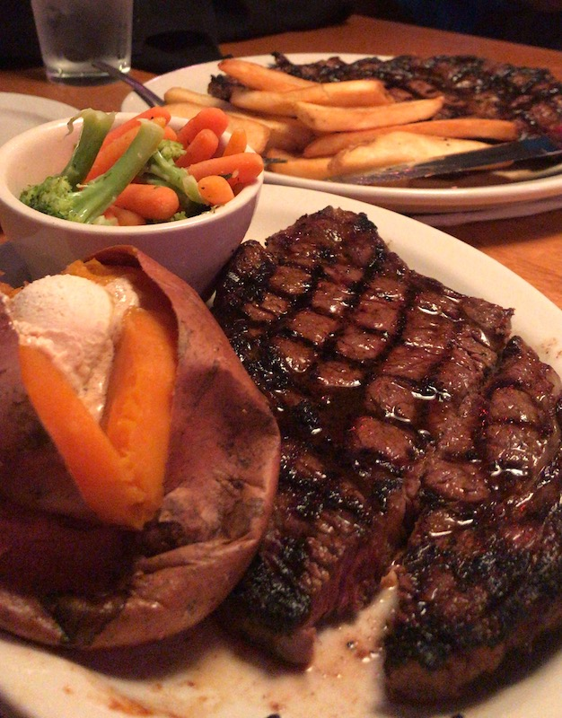
Steak from Texas Roadhouse in Madison Heights, Michigan
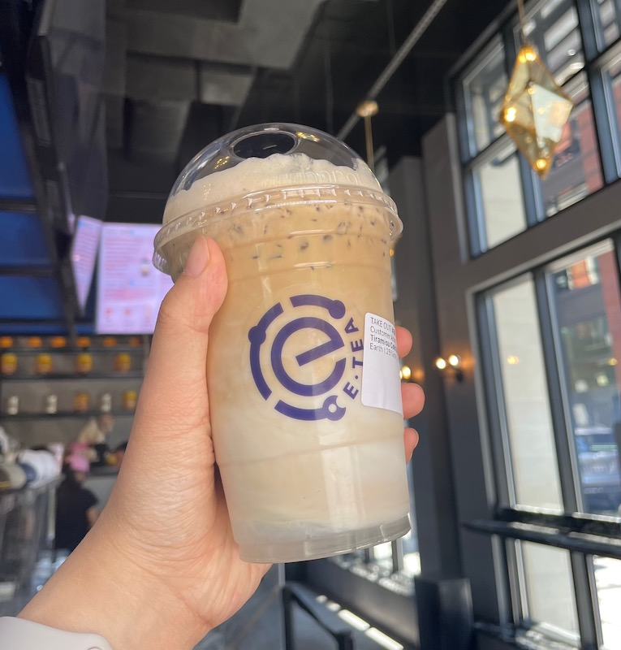
Tiramisu Cold Brew Coffee from E-Tea in Washington, D.C.
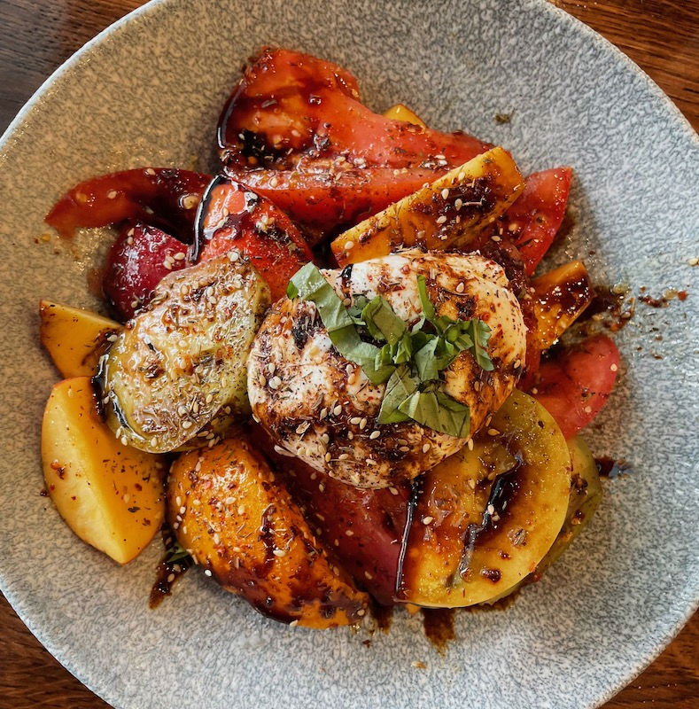
Tomato Burrata Salad from Hank's Oyster Bar in Washington, D.C.